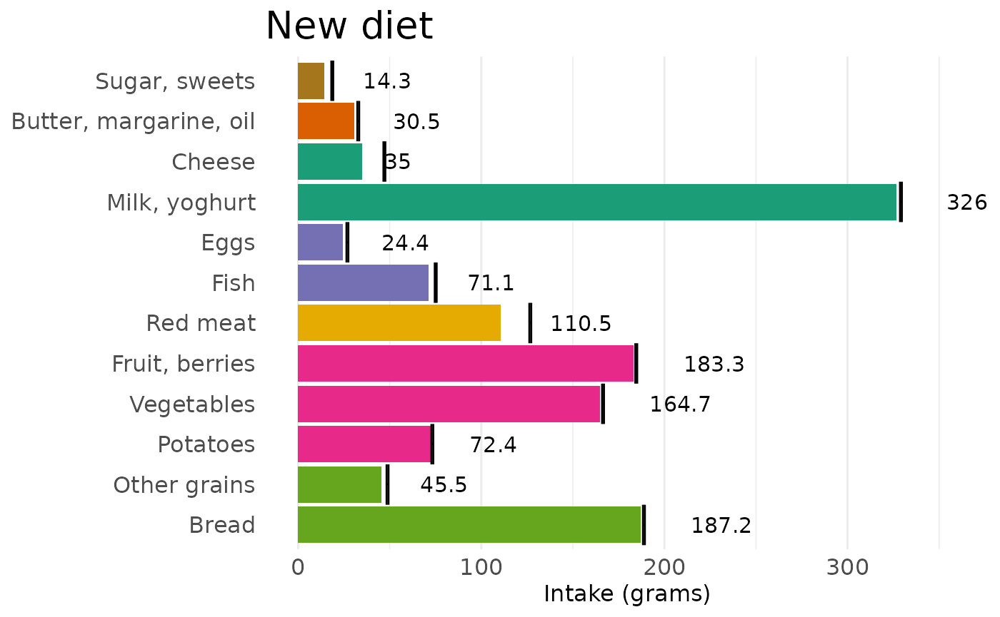

noreden provides user-friendly functions to facilitate
sustainable diet discovery. Given information for food (groups) and
their nutritional and environmental impact information, the aim is to
find a new diet (i.e. set of foods) that is healthy, acceptable, yet
more sustainable in terms of environmental impact.
The optimization problem implemented minimizes the difference between the current and new target diet, subject to a set of inequality constraints with respect to nutrition and environmental impact. More details can be found in this document: Optimization for NorEden.
In order to find a new diet, you need the following input data:
- current diet: food group names and intake (gram) for each food group
- nutrition (per unit): used to compute total nutrition, such as energy, protein.
- environment impact (per unit): used to compute total impact, such as ghge (green house gas emission)
- constraint: we implement two inequality constraints for each nutrition / env impact, such that the total amount (‘contribution’) falls within a range. In this package the values are based on current diet’s total contribution.
An example
We use a simple example to demonstrate the main features of the package. To get started, load the package.
Process input
We need some information on the current diet we wish to optimize. For now, we use the average diet summarized from a Norwegian dietary survey. However in the future, we shall implement flexible input options so that you can insert the data yourself.
head(all_diet)
#> # A tibble: 6 × 4
#> food_name intake_mean intake_lwr intake_upr
#> <chr> <dbl> <dbl> <dbl>
#> 1 Bread 188. 18.8 344.
#> 2 Other grains 48.3 4.83 156.
#> 3 Cakes 38.2 3.82 142.
#> 4 Potatoes 72.8 7.28 231.
#> 5 Vegetables 166. 16.6 420.
#> 6 Legumes 3.76 0.376 30.7We also need the contribution per unit (referred to
as cpu) for each of the food. The food unit is per gram,
and units for nutrition and environmental impact depends on the
outcome.
head(contrib_per_unit)
#> # A tibble: 6 × 10
#> food_name energy protein carbs sugar fiber fat vitaminc calcium
#> <chr> <dbl> <dbl> <dbl> <dbl> <dbl> <dbl> <dbl> <dbl>
#> 1 Bread 10.7 0.0912 0.441 0.00285 0.0633 0.0302 0.00570 0.336
#> 2 Other grains 14.0 0.1 0.607 0.0133 0.0578 0.0422 0 0.4
#> 3 Cakes 14.2 0.0674 0.424 0.185 0.0225 0.152 0 0.590
#> 4 Potatoes 3.79 0.0206 0.178 0 0.0177 0.00737 0.133 0.0885
#> 5 Vegetables 1.57 0.0149 0.0498 0.00517 0.0207 0.00841 0.207 0.259
#> 6 Legumes 8.57 0.143 0.286 0 0.0857 0.0286 0 0.571
#> # ℹ 1 more variable: ghge <dbl>Select food and outcomes of interest
We select 12 foods, and 5 outcomes of interest.
tag_food_12 <- c('Bread', 'Vegetables', 'Red meat',
'Milk, yoghurt', 'Fish', 'Cheese',
'Eggs', 'Fruit, berries', 'Potatoes',
'Other grains', 'Butter, margarine, oil', 'Sugar, sweets')
tag_outcome_5 <- c('energy', 'protein', 'carbs', 'fat', 'ghge')For the current diet selection, we get the average diet
(intake_mean) as a baseline, from which we search for a new
diet that satisfy our requirements; in addition, we also get the upper
and lower bound for the new diet so that it is not too far from the
current one.
diet_selected <- select_diet(
data_diet = all_diet,
tag_food = tag_food_12)
diet_selected
#> # A tibble: 12 × 4
#> food_name intake_mean intake_lwr intake_upr
#> <chr> <dbl> <dbl> <dbl>
#> 1 Bread 188. 18.8 344.
#> 2 Other grains 48.3 4.83 156.
#> 3 Potatoes 72.8 7.28 231.
#> 4 Vegetables 166. 16.6 420.
#> 5 Fruit, berries 184. 18.4 553.
#> 6 Red meat 126. 12.6 300.
#> 7 Fish 74.6 7.46 303.
#> 8 Eggs 26.4 2.64 112.
#> 9 Milk, yoghurt 329. 32.9 901.
#> 10 Cheese 46.6 4.66 122.
#> 11 Butter, margarine, oil 32.3 3.23 71.4
#> 12 Sugar, sweets 18.1 1.81 66Do the same for outcomes on selected foods.
cpu_selected <- select_perunit(
data_perunit_contrib = contrib_per_unit,
tag_food = tag_food_12,
tag_outcome = tag_outcome_5)
cpu_selected
#> # A tibble: 12 × 6
#> food_name energy protein carbs fat ghge
#> <chr> <dbl> <dbl> <dbl> <dbl> <dbl>
#> 1 Bread 10.7 0.0912 0.441 0.0302 0.00107
#> 2 Other grains 14.0 0.1 0.607 0.0422 0.00235
#> 3 Potatoes 3.79 0.0206 0.178 0.00737 0.00037
#> 4 Vegetables 1.57 0.0149 0.0498 0.00841 0.00103
#> 5 Fruit, berries 2.73 0.00758 0.134 0.00408 0.00072
#> 6 Red meat 8.34 0.173 0.0136 0.139 0.0129
#> 7 Fish 6.09 0.170 0.0245 0.0748 0.00311
#> 8 Eggs 6.18 0.130 0.00407 0.106 0.00215
#> 9 Milk, yoghurt 1.98 0.0359 0.0559 0.0111 0.00143
#> 10 Cheese 13.5 0.217 0.0484 0.242 0.0103
#> 11 Butter, margarine, oil 23.4 0.0133 0.0233 0.615 0.00467
#> 12 Sugar, sweets 18.0 0.0533 0.609 0.178 0.00387Compute total contribution
We compute the total contribution of the food combination. This is the basis when we search for new diet that satisfies the nutrition and environmental constraints.
tc <- compute_total_contrib(
data_diet = diet_selected,
data_perunit_contrib = cpu_selected)
tc
#> $total_contrib
#> tag_outcome total_contrib
#> 1 energy 7762.508053
#> 2 protein 88.576337
#> 3 carbs 194.438480
#> 4 fat 74.404123
#> 5 ghge 3.739236
#>
#> $tag_food
#> [1] "Bread" "Other grains" "Potatoes"
#> [4] "Vegetables" "Fruit, berries" "Red meat"
#> [7] "Fish" "Eggs" "Milk, yoghurt"
#> [10] "Cheese" "Butter, margarine, oil" "Sugar, sweets"
#>
#> $tag_outcome
#> [1] "energy" "protein" "carbs" "fat" "ghge"Set constraints
The inequality constraints look like this:
- total energy <= upper bound for energy
- total energy >= lower bound for energy
By default we can set the upper bound to be the same as the current total outputs, and lower bound to be 90% of the current total outputs.
constr_coef_df <- set_constr_coef(
tag_outcome = tag_outcome_5,
coef_lwr = rep(0.9, length(tag_outcome_5)),
coef_upr = rep(1.0, length(tag_outcome_5)))
constr_coef_df
#> tag_outcome coef_constrlwr coef_construpr
#> 1 energy 0.9 1
#> 2 protein 0.9 1
#> 3 carbs 0.9 1
#> 4 fat 0.9 1
#> 5 ghge 0.9 1When we try to reduce the output in a specific outcome (such as
ghge), we can set it to be 90% the previous level: the function
reduce_constr() allows you to set it.
# reduce ghge to 0.9
constr_coef_df_red <- reduce_constr(
data_constr_coef = constr_coef_df,
tag_outcome_reduce = 'ghge',
coef_reduce = 0.9)
constr_coef_df_red
#> tag_outcome coef_constrlwr coef_construpr
#> 1 energy 0.90 1.0
#> 2 protein 0.90 1.0
#> 3 carbs 0.90 1.0
#> 4 fat 0.90 1.0
#> 5 ghge 0.81 0.9Use total contribution and constraint coefficients to compute the upper and lower bound.
constr_val_reduce <- compute_constr(
data_total_contrib = tc$total_contrib,
data_constr_coef = constr_coef_df_red)
constr_val_reduce
#> tag_outcome total_contrib coef_constrlwr coef_construpr constr_lwr
#> 1 energy 7762.508053 0.90 1.0 6986.257248
#> 2 protein 88.576337 0.90 1.0 79.718703
#> 3 carbs 194.438480 0.90 1.0 174.994632
#> 4 fat 74.404123 0.90 1.0 66.963711
#> 5 ghge 3.739236 0.81 0.9 3.028781
#> constr_upr
#> 1 7762.508053
#> 2 88.576337
#> 3 194.438480
#> 4 74.404123
#> 5 3.365312Set standardized constraints
Sometimes it is better for computaion to use standardized values rather than the original. We have implemented one way to standardize.
stdcoef <- compute_stdcoef(data_perunit_contrib = cpu_selected)
stdcoef
#> $std_coef
#> tag_outcome std_coef
#> 1 energy 0.1449335
#> 2 protein 13.7615608
#> 3 carbs 4.3037780
#> 4 fat 5.7738141
#> 5 ghge 251.6962095
#>
#> $method
#> [1] "sd"
cpu_selected_std_res <- compute_std_unit_contrib(
uc_raw = cpu_selected,
std_coef = stdcoef$std_coef)
cpu_selected_std <- cpu_selected_std_res$uc_std
# total contrib (std)
tc_std <- compute_total_contrib(
data_diet = diet_selected,
data_perunit_contrib = cpu_selected_std)
tc_std
#> $total_contrib
#> tag_outcome total_contrib
#> 1 energy 1125.0477
#> 2 protein 1218.9486
#> 3 carbs 836.8200
#> 4 fat 429.5956
#> 5 ghge 941.1514
#>
#> $tag_food
#> [1] "Bread" "Other grains" "Potatoes"
#> [4] "Vegetables" "Fruit, berries" "Red meat"
#> [7] "Fish" "Eggs" "Milk, yoghurt"
#> [10] "Cheese" "Butter, margarine, oil" "Sugar, sweets"
#>
#> $tag_outcome
#> [1] "energy" "protein" "carbs" "fat" "ghge"Now we directly use the 90% ghge constraint coefficients.
# constraints based on std total contrib
constr_val_reduce_std <- compute_constr(
data_total_contrib = tc_std$total_contrib,
data_constr_coef = constr_coef_df_red)
constr_val_reduce_std
#> tag_outcome total_contrib coef_constrlwr coef_construpr constr_lwr constr_upr
#> 1 energy 1125.0477 0.90 1.0 1012.5430 1125.0477
#> 2 protein 1218.9486 0.90 1.0 1097.0538 1218.9486
#> 3 carbs 836.8200 0.90 1.0 753.1380 836.8200
#> 4 fat 429.5956 0.90 1.0 386.6360 429.5956
#> 5 ghge 941.1514 0.81 0.9 762.3326 847.0363Find new diet
In order to run the algorithm to search for new diet, we need to provide the algorithm the data we prepared from previous steps in a format that is ordered by outcome.
Here we use the standardized constraints for numerical stability.
# split constraint values
constval <- values_by_tag_outcome(
data_unit_contrib = cpu_selected_std,
data_constr = constr_val_reduce_std)
constval$food_name
#> [1] "Bread" "Other grains" "Potatoes"
#> [4] "Vegetables" "Fruit, berries" "Red meat"
#> [7] "Fish" "Eggs" "Milk, yoghurt"
#> [10] "Cheese" "Butter, margarine, oil" "Sugar, sweets"
constval$tag_outcome
#> [1] "energy" "protein" "carbs" "fat" "ghge"
# for energy, unit_contrib per food, lwr and upr bound of total contrib
constval$val$energy
#> $unit_contrib
#> [1] 1.5501443 2.0322902 0.5493793 0.2268688 0.3955038 1.2090119 0.8821135
#> [8] 0.8955243 0.2869315 1.9569367 3.3898076 2.6070884
#>
#> $lwr
#> [1] 1012.543
#>
#> $upr
#> [1] 1125.048Run the optimization, and retrieve the new diet along with current diet.
res <- find_new_diet(diet0 = diet_selected$intake_mean,
diet0_upr = diet_selected$intake_upr,
diet0_lwr = diet_selected$intake_lwr,
tag_outcomes = tag_outcome_5,
constraint_val = constval$val,
print_runtime = T)
# collect result
new_diet <- return_new_diet(
result_obj = res$run_optim,
data_current_diet = diet_selected)
new_diet
#> food_name new current
#> 1 Bread 187.14290 188.31866
#> 2 Other grains 45.53588 48.31437
#> 3 Potatoes 72.37285 72.79364
#> 4 Vegetables 164.69252 165.98669
#> 5 Fruit, berries 183.22272 184.13142
#> 6 Red meat 110.61211 126.26154
#> 7 Fish 71.13820 74.61885
#> 8 Eggs 24.37455 26.41185
#> 9 Milk, yoghurt 326.86431 328.64505
#> 10 Cheese 34.88251 46.59652
#> 11 Butter, margarine, oil 30.57110 32.31694
#> 12 Sugar, sweets 14.28662 18.14473Present the results
We can show some useful comparisons between the two diets, in terms of absolute and relative percent change.
# compute difference
new_old_compare <- compare_new_diet(data_new_diet = new_diet,
data_current_diet = diet_selected)
new_old_compare
#> food_name new current current_lwr current_upr abs_change
#> 1 Bread 187.14 188.32 18.83 343.8 -1.18
#> 2 Other grains 45.54 48.31 4.83 155.7 -2.78
#> 3 Potatoes 72.37 72.79 7.28 230.7 -0.42
#> 4 Vegetables 164.69 165.99 16.60 419.7 -1.29
#> 5 Fruit, berries 183.22 184.13 18.41 552.7 -0.91
#> 6 Red meat 110.61 126.26 12.63 299.6 -15.65
#> 7 Fish 71.14 74.62 7.46 302.9 -3.48
#> 8 Eggs 24.37 26.41 2.64 111.6 -2.04
#> 9 Milk, yoghurt 326.86 328.65 32.86 900.6 -1.78
#> 10 Cheese 34.88 46.60 4.66 121.6 -11.71
#> 11 Butter, margarine, oil 30.57 32.32 3.23 71.4 -1.75
#> 12 Sugar, sweets 14.29 18.14 1.81 66.0 -3.86
#> perc_change
#> 1 -0.01
#> 2 -0.06
#> 3 -0.01
#> 4 -0.01
#> 5 0.00
#> 6 -0.12
#> 7 -0.05
#> 8 -0.08
#> 9 -0.01
#> 10 -0.25
#> 11 -0.05
#> 12 -0.21We can also validate whether the new diet satisfies the constraints.
# validate constraints
new_diet_validate <- validate_diet_contrib(data_new_diet = new_diet,
data_unit_contrib = cpu_selected,
data_constr = constr_val_reduce)
new_diet_validate
#> tag_outcome total_contrib_new total_contrib coef_constrlwr coef_construpr
#> 1 energy 7268.63 7762.51 0.90 1.0
#> 2 protein 81.77 88.58 0.90 1.0
#> 3 carbs 188.61 194.44 0.90 1.0
#> 4 fat 66.96 74.40 0.90 1.0
#> 5 ghge 3.37 3.74 0.81 0.9
#> constr_lwr constr_upr check deviation
#> 1 6986.26 7762.51 ok 0
#> 2 79.72 88.58 ok 0
#> 3 174.99 194.44 ok 0
#> 4 66.96 74.40 ok 0
#> 5 3.03 3.37 ok 0It is possible to visualize the results or present results in better looking tables.
d_compare_gram <- prep_diet_comparison_gram(
new_old_compare)
p1 <- plot_diet_comparison_gram(plot_obj = d_compare_gram,
title_text = 'New diet',
axis_x_text = 'Food groups',
axis_y_text = 'Intake (grams)')
p1
#d_compare_percent <- prep_diet_comparison_percent(
# data_dietsummary = new_old_compare)
# p2 <- plot_diet_comparison_percent(plot_obj = d_compare_percent,
# title_text = 'Percent change',
# axis_x_text = 'Food groups',
# axis_y_text = 'Percent')
# library(patchwork)
# p1 + p2 + plot_layout(nrow = 1)Table with comments.
d_tb_validate <- prep_validate_table(
data_validate_diet = new_diet_validate)
table_validate(d_tb_validate)| Outcome |
Total contribution
|
Constraint
|
||
|---|---|---|---|---|
| New diet | Current diet | Range | Comments | |
| energy | 7268.63 | 7762.51 | 6986.26‐7762.51 | Ok |
| protein | 81.77 | 88.58 | 79.72‐88.58 | Ok |
| carbs | 188.61 | 194.44 | 174.99‐194.44 | Ok |
| fat | 66.96 | 74.40 | 66.96‐74.40 | Ok |
| ghge | 3.37 | 3.74 | 3.03‐3.37 | Ok |